MOS Technology 6502 is a pretty interesting microprocessor designed by Chuck Peddle and Bill Mensch and released in 1975. Obviously, the processor was introduced as an inexpensive replacement for Motorola 6800.
6502 has an 8-bit architecture with 16-bit address lines. It has three index registers (X, Y, and stack pointer) plus the accumulator, the 16-bit program counter, and the flag register. 6502 supports 13 addressing modes.
My project is to implement these components and combine them together as usable computer system:
While I was doing some experiment at the Digital Systems Lab of my school (Lab 304, Electrical Engineering Building), I picked up the manual of a spartan-3 board and read it. It had a section that talked about VGA timings and how CRT worked. I was then so interested to design and implement this CRT controller myself. Then I came up with the idea to design a sequencer, a two-port frame buffer, a color palette module, and a graphics controller, and to connect them together so that they behave exactly like the famous text-mode 0xb8000 buffer in the IBM PC world when they are interfaced to a CPU.
In the following summer, I got a Nexys 2 board and implemented the VGA controller. It was very fun to design and debug a VGA. I thought about using it as a base for the PPU of the NES project. I also decided to use it whenever I would implement a computer in VHDL.
I wanted to design a computer in VHDL since I knew about VHDL. I thought about implementing a MIPS, but while I was working on NES, 6502 took all of my mind! I loved it; so I decided to implement one 6502 module for both NES project and this one.
As explained above, the VGA controller was implemented before the processor and other components. I started with a simple CRT controller that generates a 640x480 image with all pixels yellow.
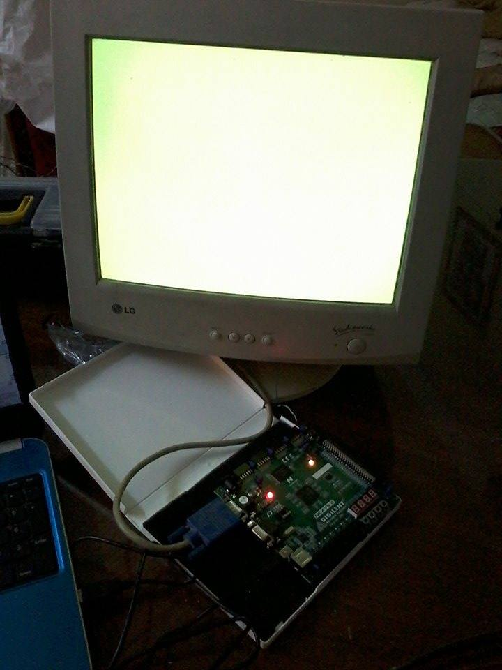
Next step was to implement other components. The final design looked like the original design by IBM, but this one is much more simpler. Working on this design let me understand how the IBM VGA worked internally, and how 0xA0000-0xBFFFF memory accesses in the IBM PC-compatible computers are handled by hardware. I was excited when some glitches (caused by propagation delays in the circuit) appeared on the CRT screen, LOL! I could finally erase them in the final design.
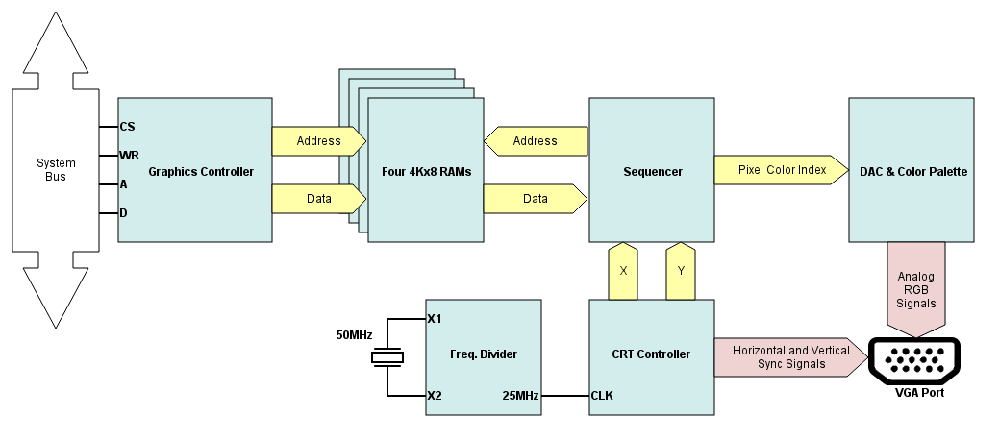
The final design.
I implemented a module that allowed to write to the VGA memory using the switches and buttons on Nexys 2 board. Here are the results:
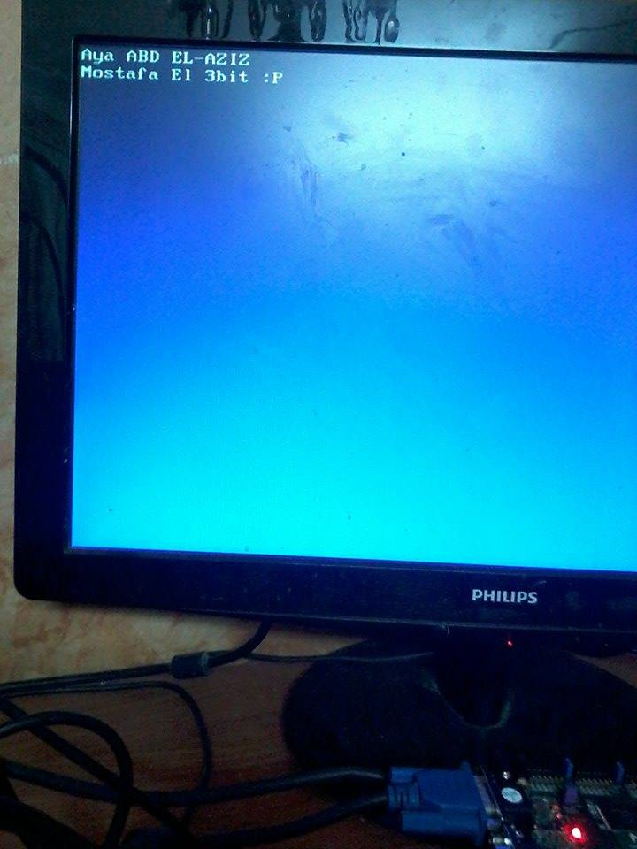
Written by my sister Aya, using the switches on the
board with the help of ASCII tables available online.
I started working on the 6502 processor for both NES and this project as explained above. Actually, It was my first experience to work on a processor in VHDL. I wrote a prototype that supported some little addessing modes and instructions, then interfaced it with the VGA and a 256-byte RAM in the following manner (all in VHDL):
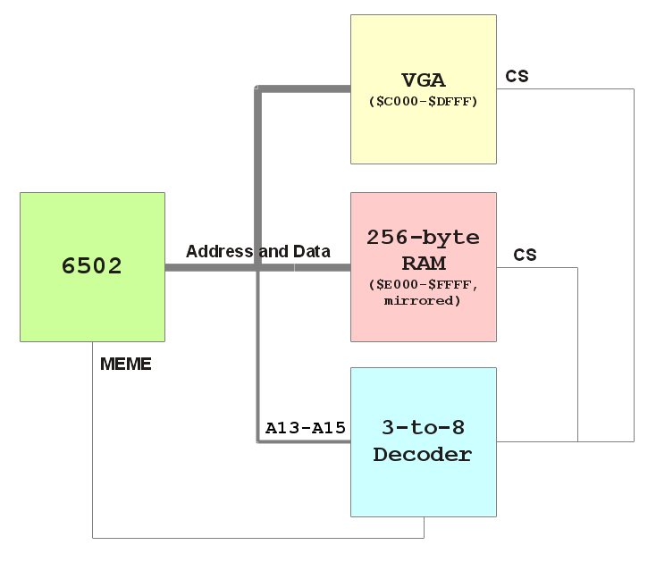
Initial design for the computer.
My sister wrote a simple boot loader for the machine. The loader simply writes the word "Hello" to the VGA memory at $C000 then halts. I assembled the loader using ACME (6502 ISA is straightforward, you can assemble the program manually) then loaded it to the 256x8 RAM. Here are the results:
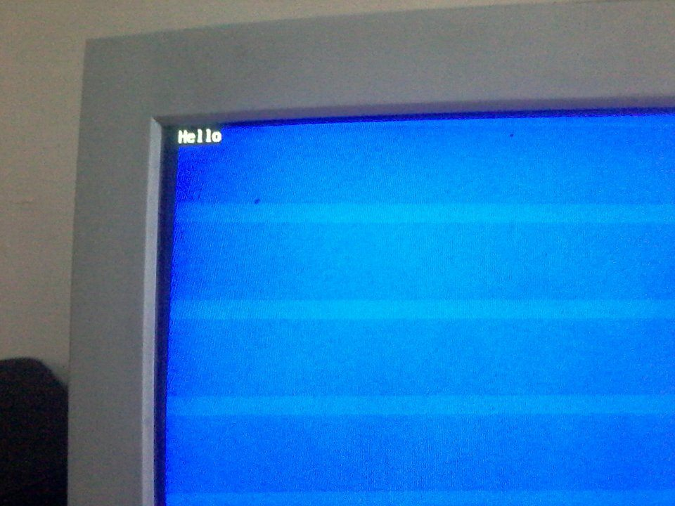
"Hello", printed by the boot loader.
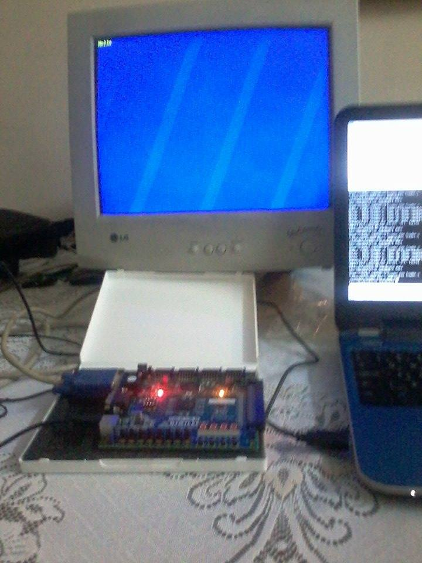
The big picture.
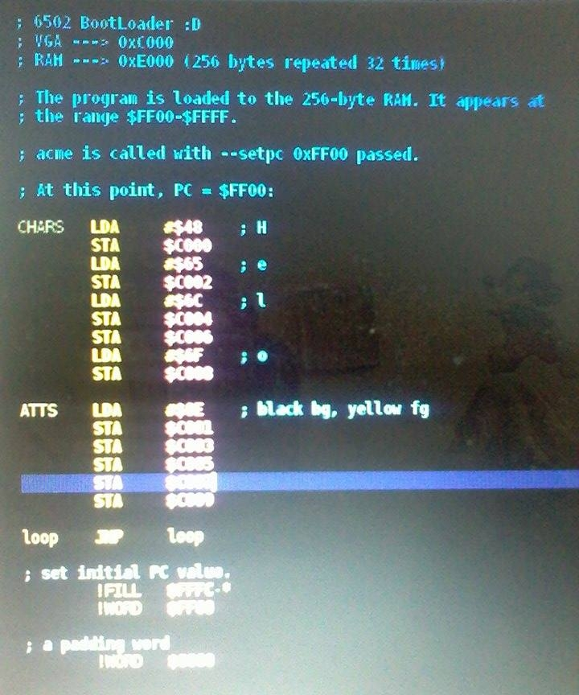
The boot loader, mostly written by Aya just for fun.
Because the initial design of the CPU was too lousy, I decided to redesign the processor in a microprogrammed fashion (just like T-DEC/102). Here is the final design for the CPU:
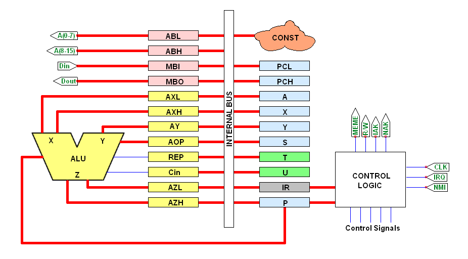
The final CPU design (click on the image for full size).
The ALU supports 8 operations: ADD, SUB, SHL, SHR, BIT, AND, OR, and EOR. The ALU has two sides, X (16-bit) and Y (8-bit). Y is casted to a 16-bit signed number if REP is 1 (if Y is $8F and REP=1, then Y is casted to $FF8F). Some instructions, like conditional branching instructions, make use of REP to add a signed 8-bit number (branch offset) to a 16-bit number (PC). AOP selects which ALU operation is to be activated. bit 0 of AOP activates the ADD operation, bit 1 activates the SUB, etc... Cin is the value of carry in/borrow in used by ADD/SUB/SHL/SHR circuits. The ALU was first written in VHDL and then tested:
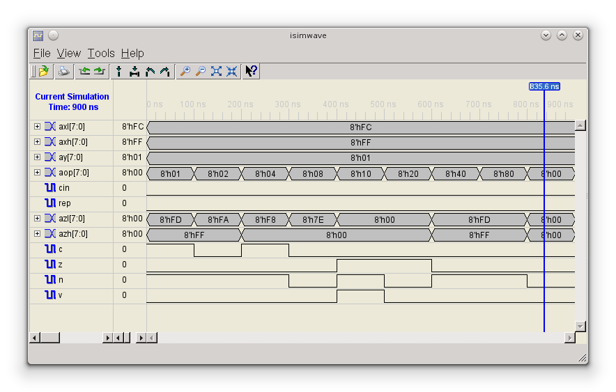
ALU simulation.
The control unit consists of the microprogram ROM, along with a lookup table and sequencing logic. The lookup table contains the addresses of macro-instructions. For example, The BEQ instruction (opcode: $F0) starts at address $0417 in the microprogram memory. If the input of the lookup table is $F0, the output is simply $0417. You can now deduce the input of the lookup table is directly connected to IR, and the output is connected to the sequencer.
Microinstructions are 16-bit wide and have 4 formats:
REG: An ordinary register transfer microinstruction. The microinstruction simply contains the state of control signals (encoded to minimize instruction width). After the micro-instruction is executed, the sequencer will increase by 1 to execute the next instruction.
LOOKUP: This microinstruction tells the sequencer to be updated with the value of the output of lookup table, instead of being increased by 1. After a lookup microinstruction, SEQ=LOOKUP_OUTPUT+OFFSET where OFFSET is a 3-bit value encoded in the micro-instruction word.
JUMP IF 0: This micro-instruction tells the sequencer to be updated with an 11-bit address encoded in the micro-instruction word iff the flag x is 0. We have 8 flags that can be tested (1, C, Z, N, V, NMI, IRQ, and 0). IRQ is always 0 if I is 1. A flag is selected by a 3-bit value encoded in the instruction word. If the value of the selected flag is not 0, SEQ will be increased by 1.
JUMP IF 1: Just like the JUMP IF 0, but the value of the selected flag is compared with 1 instead.
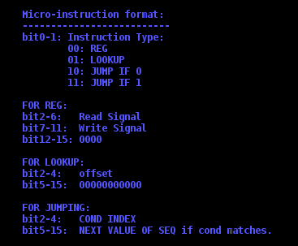
The format of micro-instruction word.
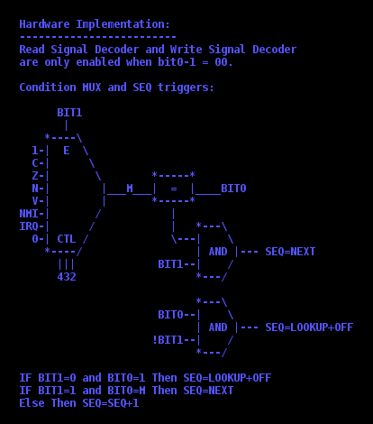
Hardware implementation of sequencing logic.
As for T-DEC/102, I wrote my own micro-assembler with its own formal language. REG microinstructions are written like this: [SRC] <-- [DEST], while JUMP IF 0/1 instructions are written like this: If (C = YES) Goto LABEL. Goto statements are allowed to be used without If, in this case the micro-assembler will translate them to If (TRU = YES) Goto LABEL, where TRU is the flag that always has the value of 1 (see above). LOOKUP statements are written like this: LOOKUP+i where i is the offset which can be any number less than 8.
The main task of the micro-assembler is to translate these statements to the binary format described above, so that the control unit can understand the microcode and execute it properly. As usual, I used the beautiful macro processor, GNU M4, to simplify the job of the micro-assembler. The output of the microassembler is a binary file that is loaded directly into the microprogram ROM inside the CPU, as well as the lookup table that is loaded into the lookup ROM inside the CPU. Both ROMs are implemented as block RAMs on the FPGA chip.
The microprogram implements the 56 macro-instructions of 6502, along with the 13 addessing modes supported by the original 6502 microprocessor. It also implements the logic for RESET and NMI interrupts. IRQ logic and BRK instruction are TBD.
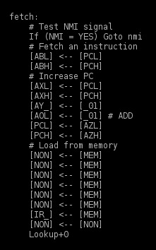
A sample from the micro-code showing the fetch routine.
I decided to use the RAM and ROM chips on Nexys-2 board to store the operating system and its temporary data. In order to install the OS on the on-board ROM, The Makefile first programs the FPGA chip on the Nexys-2 board using BIST.bit from Digilent (It can be downloaded from their website, visit the Nexys2 product page and scroll down to "support documents" section).
BIST.bit provides an EPP interface for programming the ROM and RAM chips on the board. I wrote a C program that communicates with this interface through EPP protocol (over USB). The Makefile will compile this C program and execute it. The program erases the ROM and then installs the firmware on the ROM. This procedure takes several seconds. Refer to upload/ directory in the source code for more information.
In order to interface the CPU with both ROM and RAM chips, I wrote a memory controller in VHDL which interfaced the CPU bus from one side, and the ROM/RAM chips through the other side. 16KB of RAM appears at the address range ($0000-$3FFF), 8KB of RAM appears at the VGA address space ($6000-$7FFF). When the running program writes to VGA, both VGA and RAM are written. When the running program reads from VGA address space, only RAM is read, because VGA doesn't support this. 32KB of ROM appears at ($8000-$FFFF), This 32KB region contains the operating system which is loaded there as described above.
The PS/2 Controller is so simple, it consists of a debouncer and a finite state machine that listens to scancodes sent by the keyboard. When a button is pressed/released, the keyboard sends a scancode through the serial PS/2 cable, and the FSM triggers an interrupt, which is connect to the NMI input of the CPU. On the next fetch cycle, the CPU sends a NAK (NMI ACK) signal. The keyboard controller releases the interrupt signal when it receives the NAK, and then the CPU releases the NAK as well. Finally, the CPU jumps to the NMI routine pointed to by the vector stored at $FFFA, after pushing PCH, PCL, and P registers.
Here is the final design of the 6502 FPGA computer.
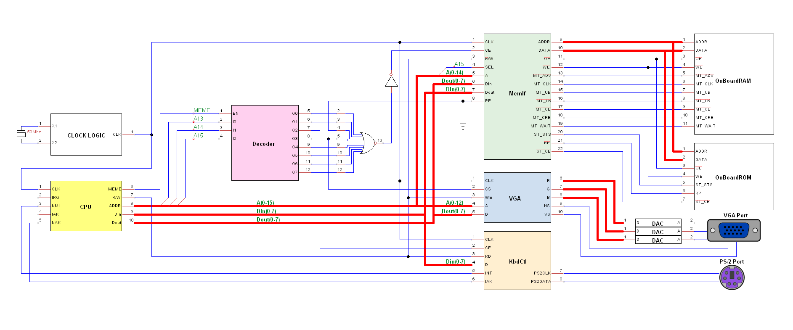
My 6502 FPGA computer design.
While I was working on the OS, I realized that cc65 is one of the most beautiful compiler projects in this world. I obtained the source code of the run-time library of cc65, and edited it to be compatible with my machine, then wrote the OS in both C and assembly, then compiled it with cc65 compiler and assembler. After some debugging, everything worked well! The cc65 compiler translates C code into assembly, so that you can easily study the output of the compiler, this helped me understanding the source code of the run-time library. I chose to write the OS in C and assembly (instead of only assembly) to save time. The OS consists of the following modules:
To test the OS, I wrote an emulator that simulates the microcode and the computer/cpu design shown above. The emulator has the option to dump the memory image to help me debugging the system. Here is a screen-shot of the operating system running on the emulator:
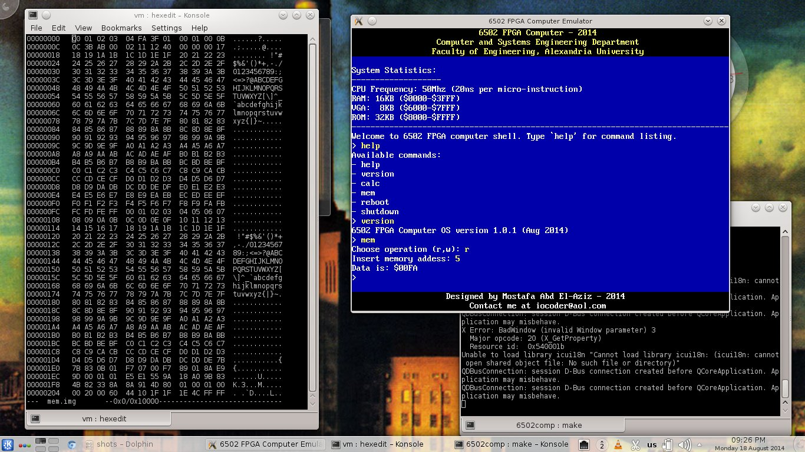
The OS running on the emulator.
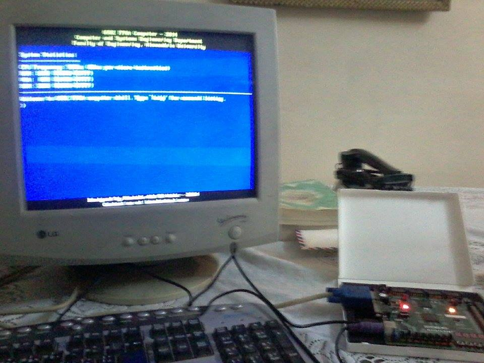
The final machine - booted.
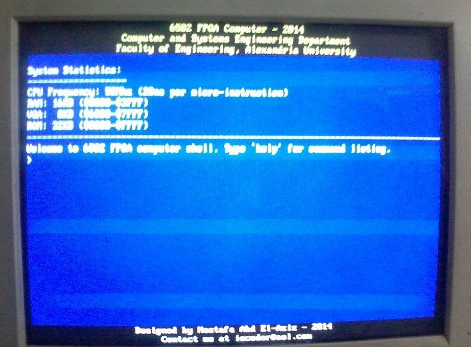
The final machine - the welcoming shell.
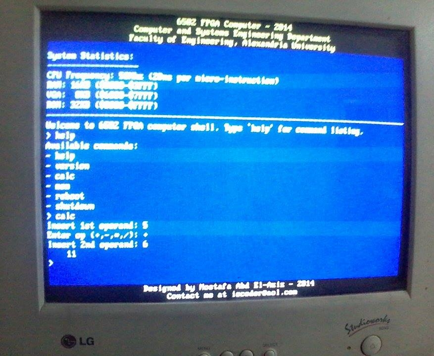
The final machine - some shell commands executed.